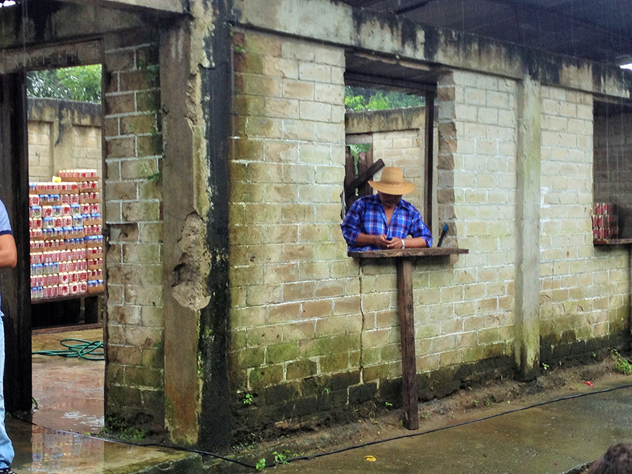

Environmental Brigade to Panama
An environmental brigade to establish an ongoing permaculture project
I joined fourteen other Ball State students on a self-funded trip to Panama through Global Brigades, an international sustainable development organization. There are various types of trips, or brigades, that work with under-resourced communities in Panama, Nicaragua, Honduras, and Ghana. The particular brigade was an Environmental Brigade to the remore community of Piriati Embera. Our group was responsible for doing intensive, hands-on work in a permaculture field.

While not hard at work, our team would reflect on the events of the day and work on our educational "charlas" to present to the communities. We enjoyed tasting the regional food and experiencing the local culture. At the end of the week, we were even fortunate enough to be painted with the Tagua ink with which the Embera people stain their skin.
In Piriati Embera, Panama, the local communities live simple lives.
It was noticeable warmer in Panama, but the intermittent rain kept the climate comfortable.
We were honored to be welcomed into the community as special guests at the children's graduation ceremony for an afternoon of dancing and playing. We also had the opportunity to experience the traditional dances that the women performed for us.